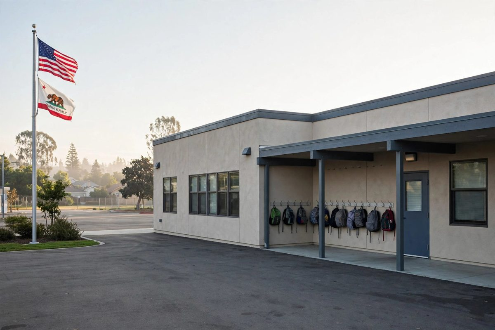

ह्याकरले परीक्षा ठेकेदारबाट क्यालिफोर्नियाका लाखौं विद्यार्थीको डेटा चोर्यो
क्यालिफोर्नियाका शिक्षा अधिकारीहरूले भनेका छन् कि एक घुसपैठियाले चोरिएको लगइन प्रयोग गरेर झन्डै चार महिनासम्म Educational Testing Service बाट विद्यार्थीका फाइलहरू चोर्यो। फाइलहरूमा पछिल्ला तीन विद्यालय वर्षमा भर्ना भएका विद्यार्थी र सन् २००६ सम्मका केही पूर्व विद्यार्थी समेटिएका छन्।

मुख्य बुँदाहरू
- स्याक्रामेन्टो, क्यालिफोर्निया। क्यालिफोर्निया शिक्षा विभागले शुक्रबार भन्यो कि एक ह्याकरले राज्यको परीक्षा सञ्चालन गर्ने गैरनाफामूलक ठेकेदार Educational Testing Service को प्रणालीबाट लाखौं…
- विभागका अनुसार घुसपैठिया पछिल्ला तीन विद्यालय वर्षमा भर्ना भएका सबै विद्यार्थीका फाइलसम्म पुगेको थियो। सन् २०२५-२६ को विद्यालय वर्षमा मात्र क्यालिफोर्नियाका सार्वजनिक विद्यालयमा ५७ लाखभन्दा बढी…
- राज्यको सूचनाले भनेको छ कि चोरिएका फाइल विद्यार्थी अनुसार फरक छन्। ती फाइलमा बालबालिकाको नाम, घरको ठेगाना, जन्म मिति, विद्यालय, जिल्ला र कक्षा, साथै राज्य र स्थानीय विद्यार्थी परिचय नम्बर हुन…
स्याक्रामेन्टो, क्यालिफोर्निया। क्यालिफोर्निया शिक्षा विभागले शुक्रबार भन्यो कि एक ह्याकरले राज्यको परीक्षा सञ्चालन गर्ने गैरनाफामूलक ठेकेदार Educational Testing Service को प्रणालीबाट लाखौं सार्वजनिक विद्यालयका विद्यार्थीको व्यक्तिगत जानकारी चोरेको छ।
विभागका अनुसार घुसपैठिया पछिल्ला तीन विद्यालय वर्षमा भर्ना भएका सबै विद्यार्थीका फाइलसम्म पुगेको थियो। सन् २०२५-२६ को विद्यालय वर्षमा मात्र क्यालिफोर्नियाका सार्वजनिक विद्यालयमा ५७ लाखभन्दा बढी विद्यार्थी भर्ना थिए। राज्यको सूचनाबारेको रिपोर्टिङ अनुसार केही पूर्व विद्यार्थी पनि प्रभावित छन्, जसमा राज्य छाडेर स्थानान्तरण पुष्टि नभएका विद्यार्थीका सन् २००६ सम्मका रेकर्ड छन्। विभाग वा ETS कसैले पनि प्रभावित व्यक्तिको ठ्याक्कै संख्या सार्वजनिक गरेको छैन।
के के चोरियो
राज्यको सूचनाले भनेको छ कि चोरिएका फाइल विद्यार्थी अनुसार फरक छन्। ती फाइलमा बालबालिकाको नाम, घरको ठेगाना, जन्म मिति, विद्यालय, जिल्ला र कक्षा, साथै राज्य र स्थानीय विद्यार्थी परिचय नम्बर हुन सक्छ। फाइलमा लिङ्ग, जाति, मुख्य भाषा, मूल देश र अंग्रेजी सिक्ने विद्यार्थीको स्थिति पनि हुन सक्छ। प्रणालीमा अशक्तता र धारा ५०४ को स्थिति, परीक्षाका लागि दिइने सुविधा, र Title I तथा McKinney-Vento कार्यक्रम जस्ता संघीय सहायताका लागि योग्यताका रेकर्ड पनि थिए। साथै परीक्षामा दर्ता, सहभागिता र नतिजा, र अंग्रेजी दक्षताका रेकर्ड पनि थिए।
अधिकारीहरूले भनेका छन् कि फाइलमा सामाजिक सुरक्षा नम्बर, सवारी चालक अनुमतिपत्र वा राहदानी नम्बर, बैंक वा कार्ड विवरण, खाता पासवर्ड, वा अभिभावकको व्यक्तिगत जानकारी थिएन।
चोरिएको एउटै लगइन, महिनौंसम्म प्रयोग
ETS ले Smarter Balanced परीक्षा र क्यालिफोर्नियाका लागि अंग्रेजी भाषा दक्षता मूल्याङ्कन सहित राज्यका मूल्याङ्कनहरू सञ्चालन गर्छ। घुसपैठ ETS र राज्यले विद्यार्थी मूल्याङ्कन डेटा साटासाट गर्न प्रयोग गर्ने सुरक्षित फाइल स्थानान्तरण साइटमा भएको हो।
राज्यको सूचना अनुसार ETS ले सेप्टेम्बर २५ मा साइटमा अनधिकृत गतिविधि फेला पार्यो र बाह्य साइबर सुरक्षा विज्ञहरूसँग अनुसन्धान सुरु गर्यो। अनुसन्धानले कसैले सम्झौता भएको लगइन प्रयोग गरेर सन् २०२६ को मे २२ देखि सेप्टेम्बर १८ का बीचमा पटक पटक फाइल चोरेको फेला पार्यो। ETS ले उक्त खाता बन्द गर्यो, साइट अफलाइन गर्यो र पछि कडा नियन्त्रणसहित नयाँ साइट बनायो। संस्थाले कानून कार्यान्वयन निकायसँग काम गरिरहेको र अहिलेसम्म चोरिएको जानकारी सार्वजनिक भएको कुनै संकेत नभेटिएको बताएको छ।
जिल्ला नेताहरूले घटना पहिलो पटक अक्टोबर २ मितिको राज्यको पत्रबाट थाहा पाए, जसमा सामान्य भर्ना डेटा प्रशोधन रोकिएको पनि भनिएको थियो। सार्वजनिक सूचना अक्टोबर १६ मा आयो र ETS ले सोही दिनदेखि प्रभावित विद्यार्थी र परिवारलाई पत्र पठाउन थाल्यो। सूचना नोभेम्बरको सुरुसम्म जारी रहने अपेक्षा छ।
एउटै लगइन किन महत्त्वपूर्ण छ
यो घटनाले एउटै चोरिएको पासवर्डले महिनौंसम्म लाखौं बालबालिकाका फाइल कसरी खोल्न सक्यो भन्ने कडा प्रश्न उठाएको छ। Johns Hopkins University Information Security Institute का Anton Dahbura ले पत्रकारहरूलाई भने कि चोरिएको लगइन कहिल्यै पनि विद्यार्थी रेकर्डसम्म पुग्ने महिनौं लामो पास बन्नु हुँदैन, र थप जाँच, पहुँच सीमा र निगरानीले किन चाँडै चोरी रोक्न सकेन भनेर सोधे।
ETS ले एक वक्तव्यमा आफ्नो अभ्यासको बचाउ गर्यो र पत्ता लागेपछि सुरक्षा कदम थपेको बतायो। राज्य शिक्षा विभागले घटनाको पूरा दायरा पत्ता लगाउन र प्रभावित परिवारलाई स्पष्ट जानकारी र सहयोग दिन अन्य राज्य निकायसँग काम गरिरहेको बताएको छ।
अहिलेका लागि अधिकारीहरूले परिवारलाई ETS वा राज्य निकायबाट आएको भन्ने शंकास्पद फोन, सन्देश र इमेलप्रति सतर्क रहन र सूचना पत्रमा दिइएका सहायता माध्यम प्रयोग गर्न भनेका छन्। साना बालबालिकाका परिवारले १६ वर्षमुनिका बालबालिकाका लागि संरक्षित उपभोक्ता रेकर्ड वा क्रेडिट फ्रिजबारे क्रेडिट ब्युरोसँग सोध्न पनि सक्छन्, जसले बालबालिकाको नाममा नयाँ खाता खोल्न रोक्छ।
स्रोतहरू
Reuters, Cybernews र क्यालिफोर्निया शिक्षा विभागको सूचनाले घुसपैठ, यसका मिति र प्रभावित विद्यार्थी डेटाका वर्गहरूबारे रिपोर्ट गरेका छन्।
समयरेखा
- May 22, 2026राज्यको सूचना अनुसार अनधिकृत पक्षले सम्झौता भएको लगइन प्रयोग गरेर ETS फाइल स्थानान्तरण साइटबाट क्यालिफोर्नियाका विद्यार्थीका फाइल चोरेको पहिलो मिति।
- Sep 18, 2026ETS को अनुसन्धानले फेला पारेको अनधिकृत चोरीको अन्तिम मिति।
- Sep 25, 2026ETS ले अनधिकृत गतिविधि पत्ता लगायो, खाता बन्द गर्यो, साइट अफलाइन गर्यो र बाह्य विज्ञहरूसँग अनुसन्धान सुरु गर्यो।
- Oct 2, 2026क्यालिफोर्निया शिक्षा विभागले काउन्टी र जिल्ला विद्यालय नेताहरूलाई घटनाबारे पत्र लेख्यो र सामान्य भर्ना डेटा प्रशोधन रोकिएको बतायो।
- Oct 16, 2026राज्यले आफ्नो सार्वजनिक सूचना प्रकाशित गर्यो र ETS ले प्रभावित विद्यार्थी र परिवारलाई सूचना दिन थाल्यो, पत्रहरू नोभेम्बरको सुरुसम्म जारी रहने छन्।